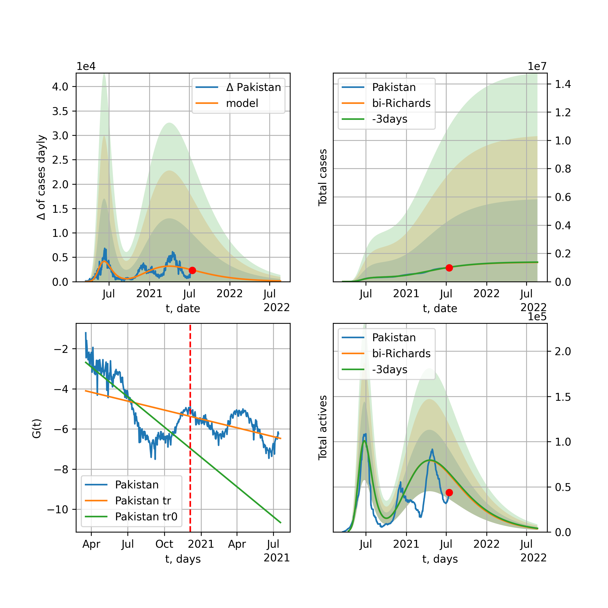

Multi-logistic model of COVID-19 dynamics
Model, code, results
Project maintained by algmaknick Hosted on GitHub Pages — Theme by mattgraham
World

World data at: 2020-05-27
+3 day model MAPE: 0.019096
model: bi-Richards
coeffs: [ 7.73581681e+06 3.71913060e+00 -5.64915106e+01 8.78318633e-03]
S.Korea scenario coeffs: [0.36242246, 2.56241634, 1.84890887, 0.13324732]
rational stdev: 0.248973
forecast at the end of period: +480 days
deltaDaycases: 7566
total cases: 10075164 ± 2508443
total death: 621793 ± 464428
bi-Richards approximation splitting point: 55
trend coefficient of determination: 0.355941
intercept: -1.892501
slope: -0.041391
trend coefficient of determination: 0.919960
intercept: -0.719480
slope: -0.030003
European Union

European Union data at: 2020-05-27
+3 day model MAPE: 0.007911
model: logisticQ
coeffs: [ 1.13848157e+06 4.44206775e-07 3.49308514e+01 -2.38078382e+05]
S.Korea scenario coeffs: [0.35416971, 0.02606324, 4.35859408, 19.30413219]
rational stdev: 0.344032
forecast at the end of period: +255 days
deltaDaycases: 1
total cases: 1541678 ± 530386
total death: 163049 ± 168282
trend coefficient of determination: 0.989394
intercept_: -7.791414558247176
coeffs_: [ 0. -0.27034912 0.00157909]
USA

USA data at: 2020-05-27
+3 day model MAPE: 0.010493
model: Richards
coeffs: [ 2.05490484e+06 4.54181847e+00 -6.33817988e+01 9.75702181e-03]
S.Korea scenario coeffs: [0.36242246, 2.56241634, 1.84890887, 0.13324732]
rational stdev: 0.346802
forecast at the end of period: +472 days
deltaDaycases: 344
total cases: 2776713 ± 962971
total death: 162401 ± 168963
trend coefficient of determination: 0.954972
intercept: -1.041275
slope: -0.044277
Spain

Spain data at: 2020-05-27
+3 day model MAPE: 0.002242
model: Richards
coeffs: [ 2.91487231e+05 8.85192010e+00 -5.17164402e+01 6.96985257e-03]
S.Korea scenario coeffs: [0.36242246, 2.56241634, 1.84890887, 0.13324732]
rational stdev: 0.236817
forecast at the end of period: +290 days
deltaDaycases: 118
total cases: 391417 ± 92694
total death: 37394 ± 26566
trend coefficient of determination: 0.954749
intercept: -0.710204
slope: -0.060880
Italy

Italy data at: 2020-05-27
+3 day model MAPE: 0.001075
model: Richards
coeffs: [ 2.36326832e+05 6.25955127e+00 -5.17805563e+01 9.55418937e-03]
S.Korea scenario coeffs: [0.36242246, 2.56241634, 1.84890887, 0.13324732]
rational stdev: 0.069997
forecast at the end of period: +262 days
deltaDaycases: 146
total cases: 314510 ± 22014
total death: 45001 ± 9449
trend coefficient of determination: 0.985208
intercept: -1.079449
slope: -0.057183
United Kingdom

United Kingdom data at: 2020-05-27
+3 day model MAPE: 0.002791
model: Richards
coeffs: [ 3.13347537e+05 3.17278630e+00 -5.59686093e+01 1.48875217e-02]
S.Korea scenario coeffs: [0.36242246, 2.56241634, 1.84890887, 0.13324732]
rational stdev: 0.134896
forecast at the end of period: +360 days
deltaDaycases: 153
total cases: 417036 ± 56256
total death: 58457 ± 23656
trend coefficient of determination: 0.957145
intercept: -1.412234
slope: -0.045626
France

France data at: 2020-05-27
+3 day model MAPE: 0.002582
model: Richards
coeffs: [1.80966030e+05 4.10226463e-01 1.63696740e+01 2.35073500e-01]
S.Korea scenario coeffs: [0.36242246, 2.56241634, 1.84890887, 0.13324732]
rational stdev: 0.485372
forecast at the end of period: +122 days
deltaDaycases: 188
total cases: 240626 ± 116793
total death: 37618 ± 54776
trend coefficient of determination: 0.927251
intercept: -2.221691
slope: -0.082736
Germany

Germany data at: 2020-05-27
+3 day model MAPE: 0.003916
model: Richards
coeffs: [ 1.79252020e+05 9.07284707e+00 -4.18261695e+01 8.86336974e-03]
S.Korea scenario coeffs: [0.36242246, 2.56241634, 1.84890887, 0.13324732]
rational stdev: 0.415993
forecast at the end of period: +192 days
deltaDaycases: 112
total cases: 240047 ± 99857
total death: 11261 ± 14053
trend coefficient of determination: 0.955187
intercept: -1.229037
slope: -0.065162
Turkey

Turkey data at: 2020-05-27
+3 day model MAPE: 0.006881
model: Richards
coeffs: [ 1.63356944e+05 6.78831552e+00 -3.83707117e+01 1.04308998e-02]
S.Korea scenario coeffs: [0.36242246, 2.56241634, 1.84890887, 0.13324732]
rational stdev: 0.248151
forecast at the end of period: +196 days
deltaDaycases: 244
total cases: 211417 ± 52463
total death: 5862 ± 4363
trend coefficient of determination: 0.794375
intercept: -0.985955
slope: -0.057535
Russia

Russia data at: 2020-05-27
+3 day model MAPE: 0.004749
model: Richards
coeffs: [5.14112774e+05 1.83865752e-01 2.80711560e+01 3.54842967e-01]
S.Korea scenario coeffs: [0.36242246, 2.56241634, 1.84890887, 0.13324732]
rational stdev: 0.165099
forecast at the end of period: +220 days
deltaDaycases: 480
total cases: 677564 ± 111865
total death: 7253 ± 3592
trend coefficient of determination: 0.987307
intercept: -3.878828
slope: -0.069268
Iran

Iran data at: 2020-05-27
+3 day model MAPE: 0.001429
model: bi-Richards
coeffs: [7.39150122e+04 3.59433856e+00 3.15860484e+01 2.07446737e-02]
S.Korea scenario coeffs: [0.36242246, 2.56241634, 1.84890887, 0.13324732]
rational stdev: 0.300858
forecast at the end of period: +304 days
deltaDaycases: 45
total cases: 201359 ± 60580
total death: 10756 ± 9708
bi-Richards approximation splitting point: 75
trend coefficient of determination: 0.949196
intercept: -0.970989
slope: -0.056014
trend coefficient of determination: 0.029258
intercept: -4.668123
slope: 0.002996
Brazil

Brazil data at: 2020-05-27
+3 day model MAPE: 0.013411
model: logisticQ
coeffs: [ 1.01793112e+06 7.60434991e-06 8.28589461e+01 -9.97420448e+03]
S.Korea scenario coeffs: [0.35416971, 0.02606324, 4.35859408, 19.30413219]
rational stdev: 0.394820
forecast at the end of period: +430 days
deltaDaycases: 50
total cases: 1377147 ± 543725
total death: 85343 ± 101085
trend coefficient of determination: 0.891006
intercept_: -4.324413613138619
coeffs_: [ 0. -0.2672293 0.00160609]

Brazil data at: 2020-05-27
+3 day model MAPE: 0.020246
model: Richards
coeffs: [8.00787807e+06 1.53076799e-01 3.80972390e+01 1.33134382e-01]
S.Korea scenario coeffs: [0.36242246, 2.56241634, 1.84890887, 0.13324732]
rational stdev: 0.346639
forecast at the end of period: +1060 days
deltaDaycases: 673
total cases: 10811908 ± 3747829
total death: 670025 ± 696770
trend coefficient of determination: 0.238886
intercept: -2.746834
slope: -0.026551
Canada

Canada data at: 2020-05-27
+3 day model MAPE: 0.003302
model: Richards
coeffs: [ 1.08131791e+05 2.87908833e+00 -6.67014132e+01 1.49755469e-02]
S.Korea scenario coeffs: [0.36242246, 2.56241634, 1.84890887, 0.13324732]
rational stdev: 0.175495
forecast at the end of period: +420 days
deltaDaycases: 34
total cases: 144901 ± 25429
total death: 11200 ± 5896
trend coefficient of determination: 0.960872
intercept: -1.579638
slope: -0.044913
Belgium

Belgium data at: 2020-05-27
+3 day model MAPE: 0.003077
model: Richards
coeffs: [ 5.89446579e+04 3.06849025e+00 -3.15170349e+01 2.24262668e-02]
S.Korea scenario coeffs: [0.36242246, 2.56241634, 1.84890887, 0.13324732]
rational stdev: 0.840880
forecast at the end of period: +192 days
deltaDaycases: 70
total cases: 77071 ± 64807
total death: 12531 ± 31611
trend coefficient of determination: 0.947540
intercept: -1.270344
slope: -0.059689
Peru

Peru data at: 2020-05-27
+3 day model MAPE: 0.042060
model: logisticQ
coeffs: [ 1.80695946e+05 1.99053569e-06 6.21185852e+01 -4.39867076e+04]
S.Korea scenario coeffs: [0.35416971, 0.02606324, 4.35859408, 19.30413219]
rational stdev: 0.387153
forecast at the end of period: +234 days
deltaDaycases: 400
total cases: 233920 ± 90562
total death: 6855 ± 7961
trend coefficient of determination: 0.976565
intercept_: -3.819325823189585
coeffs_: [ 0. -0.26763968 0.00162142]
Netherlands

Netherlands data at: 2020-05-27
+3 day model MAPE: 0.002547
model: Richards
coeffs: [ 4.64434294e+04 5.53681873e-01 -2.53530842e-01 1.29540552e-01]
S.Korea scenario coeffs: [0.36242246, 2.56241634, 1.84890887, 0.13324732]
rational stdev: 0.135315
forecast at the end of period: +192 days
deltaDaycases: 28
total cases: 62086 ± 8401
total death: 7964 ± 3232
trend coefficient of determination: 0.972280
intercept: -1.599000
slope: -0.068676
India

India data at: 2020-05-27
+3 day model MAPE: 0.011344
model: Richards
coeffs: [ 2.78848749e+06 4.38592612e-01 -5.14906130e+01 3.76325435e-02]
S.Korea scenario coeffs: [0.36242246, 2.56241634, 1.84890887, 0.13324732]
rational stdev: 0.372249
forecast at the end of period: +1060 days
deltaDaycases: 892
total cases: 3625059 ± 1349423
total death: 103806 ± 115924
trend coefficient of determination: 0.561513
intercept: -1.786583
slope: -0.021656
Switzerland

Switzerland data at: 2020-05-27
+3 day model MAPE: 0.002219
model: logisticQ
coeffs: [ 3.00779519e+04 6.92911224e-07 2.59919377e+01 -2.07360865e+05]
S.Korea scenario coeffs: [0.35416971, 0.02606324, 4.35859408, 19.30413219]
rational stdev: 0.337190
forecast at the end of period: +80 days
deltaDaycases: 19
total cases: 40465 ± 13644
total death: 2520 ± 2549
trend coefficient of determination: 0.982085
intercept_: -3.9815328350991592
coeffs_: [ 0. -0.30075406 0.00168321]
Ecuador

Ecuador data at: 2020-05-25
+3 day model MAPE: 0.007697
model: Richards
coeffs: [ 6.17560214e+04 2.36312889e+00 -8.92490350e+01 1.34901555e-02]
S.Korea scenario coeffs: [0.36242246, 2.56241634, 1.84890887, 0.13324732]
rational stdev: 0.306336
forecast at the end of period: +642 days
deltaDaycases: 9
total cases: 83246 ± 25501
total death: 7137 ± 6558
trend coefficient of determination: 0.202240
intercept: -2.045300
slope: -0.040195
Portugal

Portugal data at: 2020-05-27
+3 day model MAPE: 0.009668
model: Richards
coeffs: [ 3.13329023e+04 8.28580845e+00 -4.93506785e+01 7.66624925e-03]
rational stdev: 0.217089
forecast at the end of period: +220 days
deltaDaycases: 0
total cases: 31332 ± 6802
total death: 1357 ± 883
trend coefficient of determination: 0.895307
intercept: -0.926549
slope: -0.056006
Saudi Arabia

Saudi Arabia data at: 2020-05-27
+3 day model MAPE: 0.010143
model: Richards
coeffs: [ 2.66797194e+05 6.20580563e-01 -2.66845024e+01 4.48715785e-02]
S.Korea scenario coeffs: [0.36242246, 2.56241634, 1.84890887, 0.13324732]
rational stdev: 0.288462
forecast at the end of period: +668 days
deltaDaycases: 74
total cases: 355366 ± 102509
total death: 1922 ± 1663
trend coefficient of determination: 0.138599
intercept: -2.228919
slope: -0.018156
Sweden

Sweden data at: 2020-05-27
+3 day model MAPE: 0.005189
model: Richards
coeffs: [ 4.84617923e+04 2.15909302e+00 -6.93145561e+01 1.58004647e-02]
S.Korea scenario coeffs: [0.36242246, 2.56241634, 1.84890887, 0.13324732]
rational stdev: 0.264644
forecast at the end of period: +430 days
deltaDaycases: 42
total cases: 61896 ± 16380
total death: 7444 ± 5910
trend coefficient of determination: 0.843337
intercept: -1.399833
slope: -0.036354
Pakistan

Pakistan data at: 2020-05-27
+3 day model MAPE: 0.031193
model: Richards
coeffs: [2.51557414e+05 1.05088073e-01 6.35530040e+01 3.12249561e-01]
S.Korea scenario coeffs: [0.36242246, 2.56241634, 1.84890887, 0.13324732]
rational stdev: 0.389406
forecast at the end of period: +500 days
deltaDaycases: 118
total cases: 331478 ± 129079
total death: 6821 ± 7968
trend coefficient of determination: 0.772104
intercept: -2.963088
slope: -0.047414
Ireland

Ireland data at: 2020-05-27
+3 day model MAPE: 0.004566
model: logisticQ
coeffs: [ 2.44218149e+04 1.37499056e-06 3.55441141e+01 -9.02174590e+04]
S.Korea scenario coeffs: [0.35416971, 0.02606324, 4.35859408, 19.30413219]
rational stdev: 0.313888
forecast at the end of period: +122 days
deltaDaycases: 31
total cases: 32552 ± 10217
total death: 2140 ± 2015
trend coefficient of determination: 0.982657
intercept_: -3.911525249531044
coeffs_: [ 0. -0.26203478 0.00141853]
Mexico

Mexico data at: 2020-05-27
+3 day model MAPE: 0.010053
model: Richards
coeffs: [ 5.50926936e+05 5.63796270e-01 -6.10119295e+01 3.71906206e-02]
S.Korea scenario coeffs: [0.36242246, 2.56241634, 1.84890887, 0.13324732]
rational stdev: 0.164822
forecast at the end of period: +780 days
deltaDaycases: 250
total cases: 711682 ± 117301
total death: 78417 ± 38774
trend coefficient of determination: 0.866809
intercept: -1.981498
slope: -0.025776
Singapore

Singapore data at: 2020-05-27
+3 day model MAPE: 0.023199
model: bi-Richards
coeffs: [2.48148954e+04 9.07067864e+00 1.70927262e+01 7.81796890e-03]
S.Korea scenario coeffs: [0.36242246, 2.56241634, 1.84890887, 0.13324732]
rational stdev: 0.265852
forecast at the end of period: +290 days
deltaDaycases: 21
total cases: 42189 ± 11216
total death: 29 ± 23
bi-Richards approximation splitting point: 60
trend coefficient of determination: 0.125235
intercept: -2.318858
slope: -0.021611
trend coefficient of determination: 0.611998
intercept: -0.288993
slope: -0.030639
Chile

Chile data at: 2020-05-27
+3 day model MAPE: 0.008165
model: bi-Richards
coeffs: [5.89317970e+05 6.11432674e-02 1.09333847e+02 7.43196219e+00]
S.Korea scenario coeffs: [0.36242246, 2.56241634, 1.84890887, 0.13324732]
rational stdev: 0.418746
forecast at the end of period: +150 days
deltaDaycases: 731
total cases: 799079 ± 334611
total death: 8166 ± 10258
bi-Richards approximation splitting point: 20
trend coefficient of determination: 0.978245
intercept: -6.965052
slope: -2.493715
trend coefficient of determination: 0.969370
intercept: -49.103328
slope: -0.457136
Israel

Israel data at: 2020-05-27
+3 day model MAPE: 0.001054
model: Richards
coeffs: [ 1.70003173e+04 6.28045567e+00 -3.61093031e+01 1.42060613e-02]
S.Korea scenario coeffs: [0.36242246, 2.56241634, 1.84890887, 0.13324732]
rational stdev: 0.164537
forecast at the end of period: +192 days
deltaDaycases: 4
total cases: 23004 ± 3785
total death: 384 ± 189
trend coefficient of determination: 0.922990
intercept: -1.098454
slope: -0.089184
Austria

Austria data at: 2020-05-27
+3 day model MAPE: 0.004488
model: logisticQ
coeffs: [ 1.56928715e+04 6.91257585e-07 2.39073736e+01 -2.62923923e+05]
S.Korea scenario coeffs: [0.35416971, 0.02606324, 4.35859408, 19.30413219]
rational stdev: 0.323393
forecast at the end of period: +66 days
deltaDaycases: 8
total cases: 21159 ± 6842
total death: 822 ± 797
trend coefficient of determination: 0.980089
intercept_: -2.890577379818616
coeffs_: [ 0. -0.34447992 0.00227468]
Belarus

Belarus data at: 2020-05-27
+3 day model MAPE: 0.009198
model: Richards
coeffs: [ 6.31247330e+04 2.30143739e+00 -6.22780556e+01 1.83563336e-02]
S.Korea scenario coeffs: [0.36242246, 2.56241634, 1.84890887, 0.13324732]
rational stdev: 0.152535
forecast at the end of period: +360 days
deltaDaycases: 57
total cases: 81617 ± 12449
total death: 448 ± 205
trend coefficient of determination: 0.892388
intercept: -1.678830
slope: -0.042495
Japan

Japan data at: 2020-05-27
+3 day model MAPE: 0.003772
model: Richards
coeffs: [1.64791569e+04 1.11799044e-01 7.72712390e+01 1.17499358e+00]
S.Korea scenario coeffs: [0.36242246, 2.56241634, 1.84890887, 0.13324732]
rational stdev: 1.066820
forecast at the end of period: +150 days
deltaDaycases: 6
total cases: 22314 ± 23805
total death: 1149 ± 3677
trend coefficient of determination: 0.774686
intercept: -6.150221
slope: -0.093083
Qatar

Qatar data at: 2020-05-27
+3 day model MAPE: 0.001620
model: Richards
coeffs: [ 2.64362969e+05 4.86379864e-01 -4.23155817e+01 4.72688788e-02]
S.Korea scenario coeffs: [0.36242246, 2.56241634, 1.84890887, 0.13324732]
rational stdev: 0.547078
forecast at the end of period: +934 days
deltaDaycases: 24
total cases: 357018 ± 195317
total death: 218 ± 357
trend coefficient of determination: 0.011241
intercept: -3.197613
slope: -0.002951
Poland

Poland data at: 2020-05-27
+3 day model MAPE: 0.021573
model: Richards
coeffs: [ 2.93337669e+04 3.31875862e+00 -8.12215889e+01 1.09122104e-02]
S.Korea scenario coeffs: [0.36242246, 2.56241634, 1.84890887, 0.13324732]
rational stdev: 0.323710
forecast at the end of period: +500 days
deltaDaycases: 10
total cases: 39082 ± 12651
total death: 1787 ± 1735
trend coefficient of determination: 0.789134
intercept: -1.362871
slope: -0.038888
UAE

UAE data at: 2020-05-27
+3 day model MAPE: 0.016899
model: Richards
coeffs: [ 8.15007458e+04 1.42522068e+00 -1.01394669e+02 1.82590756e-02]
S.Korea scenario coeffs: [0.36242246, 2.56241634, 1.84890887, 0.13324732]
rational stdev: 0.182019
forecast at the end of period: +654 days
deltaDaycases: 32
total cases: 107077 ± 19490
total death: 854 ± 466
trend coefficient of determination: 0.836479
intercept: -2.055622
slope: -0.031786
Romania

Romania data at: 2020-05-27
+3 day model MAPE: 0.003093
model: Richards
coeffs: [ 2.15027624e+04 4.06775864e+00 -5.92810046e+01 1.15931774e-02]
S.Korea scenario coeffs: [0.36242246, 2.56241634, 1.84890887, 0.13324732]
rational stdev: 0.182134
forecast at the end of period: +332 days
deltaDaycases: 17
total cases: 28157 ± 5128
total death: 1858 ± 1015
trend coefficient of determination: 0.918143
intercept: -1.265724
slope: -0.045414
Ukraine

Ukraine data at: 2020-05-27
+3 day model MAPE: 0.002910
model: Richards
coeffs: [ 3.01197027e+04 1.93051480e+00 -4.46084042e+01 2.31354369e-02]
S.Korea scenario coeffs: [0.36242246, 2.56241634, 1.84890887, 0.13324732]
rational stdev: 0.174522
forecast at the end of period: +360 days
deltaDaycases: 20
total cases: 39597 ± 6910
total death: 1189 ± 622
trend coefficient of determination: 0.738000
intercept: -1.422127
slope: -0.041995
Indonesia

Indonesia data at: 2020-05-27
+3 day model MAPE: 0.023387
model: Richards
coeffs: [ 6.70297520e+04 8.32829791e-01 -9.50277127e+01 2.66657520e-02]
S.Korea scenario coeffs: [0.36242246, 2.56241634, 1.84890887, 0.13324732]
rational stdev: 0.211241
forecast at the end of period: +668 days
deltaDaycases: 39
total cases: 85275 ± 18013
total death: 5266 ± 3337
trend coefficient of determination: 0.804541
intercept: -2.035463
slope: -0.030300
Bangladesh

Bangladesh data at: 2020-05-27
+3 day model MAPE: 0.013270
model: bi-Richards
coeffs: [ 2.98856511e+05 9.81798884e-01 -5.87662229e+01 2.34331492e-02]
S.Korea scenario coeffs: [0.36242246, 2.56241634, 1.84890887, 0.13324732]
rational stdev: 0.353955
forecast at the end of period: +808 days
deltaDaycases: 101
total cases: 393538 ± 139294
total death: 5590 ± 5935
bi-Richards approximation splitting point: 29
trend coefficient of determination: 0.034871
intercept: -4.298839
slope: 0.051745
trend coefficient of determination: 0.833203
intercept: -0.651294
slope: -0.036974
South_Korea

South Korea data at: 2020-05-27
+3 day model MAPE: 0.003338
model: bi-Richards
coeffs: [ 3.07976249e+03 1.90776452e-01 -5.94002099e+01 -1.05103356e+03 4.28659624e-04]
rational stdev: 0.114792
forecast at the end of period: +52 days
deltaDaycases: 0
total cases: 10985 ± 1261
total death: 260 ± 89
bi-logisticQ approximation splitting point: 25
trend coefficient of determination: 0.936460
intercept: -5.478818
slope: -0.338423
trend coefficient of determination: 0.434357
intercept: -12.825915
slope: -0.037483
Denmark

Denmark data at: 2020-05-27
+3 day model MAPE: 0.002102
model: Richards
coeffs: [ 1.21299293e+04 5.06345584e-01 -1.18988701e+01 1.10002678e-01]
S.Korea scenario coeffs: [0.36242246, 2.56241634, 1.84890887, 0.13324732]
rational stdev: 0.296219
forecast at the end of period: +262 days
deltaDaycases: 5
total cases: 16229 ± 4807
total death: 798 ± 709
trend coefficient of determination: 0.895650
intercept: -2.019250
slope: -0.055094
Serbia

Serbia data at: 2020-05-27
+3 day model MAPE: 0.003526
model: bi-Richards
coeffs: [ 8.34362776e+03 1.68669108e+00 -5.37863412e+01 1.61979374e-02]
rational stdev: 0.144102
forecast at the end of period: +192 days
deltaDaycases: 2
total cases: 18582 ± 2677
total death: 395 ± 170
bi-Richards approximation splitting point: 50
trend coefficient of determination: 0.686626
intercept: -1.220086
slope: -0.049358
trend coefficient of determination: 0.549769
intercept: -1.890237
slope: -0.048997
Kuwait

Kuwait data at: 2020-05-27
+3 day model MAPE: 0.006551
model: bi-Richards
coeffs: [2.42676087e+04 1.40305884e-01 7.70237818e+01 1.28713560e+00]
S.Korea scenario coeffs: [0.36242246, 2.56241634, 1.84890887, 0.13324732]
rational stdev: 0.158998
forecast at the end of period: +129 days
deltaDaycases: 36
total cases: 35093 ± 5579
total death: 263 ± 125
bi-Richards approximation splitting point: 25
trend coefficient of determination: 0.117649
intercept: -7.515690
slope: -0.088711
trend coefficient of determination: 0.932985
intercept: -6.841571
slope: -0.101276
Philippines

Philippines data at: 2020-05-27
+3 day model MAPE: 0.021390
model: Richards
coeffs: [ 1.94720554e+04 3.92746184e+00 -9.66111873e+01 9.05066331e-03]
S.Korea scenario coeffs: [0.36242246, 2.56241634, 1.84890887, 0.13324732]
rational stdev: 0.328599
forecast at the end of period: +486 days
deltaDaycases: 8
total cases: 25777 ± 8470
total death: 1548 ± 1526
trend coefficient of determination: 0.675154
intercept: -1.700761
slope: -0.038393
Norway

Norway data at: 2020-05-27
+3 day model MAPE: 0.001869
model: Richards
coeffs: [ 8.36267074e+03 5.71811117e+00 -3.80858398e+01 1.30993608e-02]
S.Korea scenario coeffs: [0.36242246, 2.56241634, 1.84890887, 0.13324732]
rational stdev: 0.171235
forecast at the end of period: +192 days
deltaDaycases: 6
total cases: 11150 ± 1909
total death: 311 ± 159
trend coefficient of determination: 0.938434
intercept: -0.941734
slope: -0.068317
Czechia

Czechia data at: 2020-05-27
+3 day model MAPE: 0.001115
model: bi-Richards
coeffs: [ 3.02626998e+03 2.63137103e+00 -3.69239485e+00 1.87142877e-02]
rational stdev: 1.140204
forecast at the end of period: +80 days
deltaDaycases: 2
total cases: 10880 ± 12405
total death: 379 ± 1296
bi-Richards approximation splitting point: 59
trend coefficient of determination: 0.406156
intercept: -1.495021
slope: -0.055432
trend coefficient of determination: 0.000186
intercept: -5.373552
slope: 0.000796
Colombia

Colombia data at: 2020-05-27
+3 day model MAPE: 0.030532
model: bi-Richards
coeffs: [ 5.42607864e+04 2.23189371e+00 -2.06391720e+01 1.91803817e-02]
S.Korea scenario coeffs: [0.36242246, 2.56241634, 1.84890887, 0.13324732]
rational stdev: 0.203502
forecast at the end of period: +500 days
deltaDaycases: 14
total cases: 77886 ± 15850
total death: 2594 ± 1583
bi-Richards approximation splitting point: 40
trend coefficient of determination: 0.747778
intercept: -1.028528
slope: -0.064022
trend coefficient of determination: 0.089288
intercept: -2.961337
slope: -0.004765
Australia

Australia data at: 2020-05-27
+3 day model MAPE: 0.001068
model: bi-Richards
coeffs: [ 9.47465667e+02 7.79936022e+00 -3.76007080e+01 7.62204302e-03]
S.Korea scenario coeffs: [0.36242246, 2.56241634, 1.84890887, 0.13324732]
rational stdev: 0.749453
forecast at the end of period: +52 days
deltaDaycases: 0
total cases: 7240 ± 5426
total death: 104 ± 233
bi-Richards approximation splitting point: 50
trend coefficient of determination: 0.755510
intercept: -0.975382
slope: -0.083525
trend coefficient of determination: 0.100660
intercept: -5.237212
slope: -0.017545
Malaysia

Malaysia data at: 2020-05-27
+3 day model MAPE: 0.017908
model: logisticQ
coeffs: [ 6.91713804e+03 4.00594356e-07 3.08447594e+01 -2.57329621e+05]
S.Korea scenario coeffs: [0.35416971, 0.02606324, 4.35859408, 19.30413219]
rational stdev: 0.332927
forecast at the end of period: +115 days
deltaDaycases: 4
total cases: 9275 ± 3087
total death: 139 ± 138
trend coefficient of determination: 0.875289
intercept_: -4.461839198346388
coeffs_: [ 0. -0.24429714 0.00158127]
Dominican Republic

Dominican Republic data at: 2020-05-27
+3 day model MAPE: 0.004945
model: Richards
coeffs: [ 3.23558243e+04 1.65880493e+00 -1.05226167e+02 1.62507259e-02]
S.Korea scenario coeffs: [0.36242246, 2.56241634, 1.84890887, 0.13324732]
rational stdev: 0.158553
forecast at the end of period: +654 days
deltaDaycases: 10
total cases: 42873 ± 6797
total death: 1292 ± 614
trend coefficient of determination: 0.712468
intercept: -2.024761
slope: -0.034406
Egypt

Egypt data at: 2020-05-27
+3 day model MAPE: 0.022319
model: Richards
coeffs: [ 5.13702546e+05 3.19846871e-01 -8.61269140e+01 4.02295428e-02]
S.Korea scenario coeffs: [0.36242246, 2.56241634, 1.84890887, 0.13324732]
rational stdev: 0.190133
forecast at the end of period: +1200 days
deltaDaycases: 203
total cases: 644160 ± 122476
total death: 26728 ± 15245
trend coefficient of determination: 0.573961
intercept: -2.427979
slope: -0.018228
Finland

Finland data at: 2020-05-27
+3 day model MAPE: 0.003724
model: Richards
coeffs: [ 7.57155638e+03 2.41739777e+00 -5.54646322e+01 1.94646142e-02]
S.Korea scenario coeffs: [0.36242246, 2.56241634, 1.84890887, 0.13324732]
rational stdev: 0.155614
forecast at the end of period: +332 days
deltaDaycases: 4
total cases: 10032 ± 1561
total death: 469 ± 218
trend coefficient of determination: 0.872906
intercept: -1.504845
slope: -0.050660
Morocco

Morocco data at: 2020-05-27
+3 day model MAPE: 0.008800
model: logisticQ
coeffs: [ 7.96601064e+03 1.18263785e-06 3.46159002e+01 -7.66478082e+04]
S.Korea scenario coeffs: [0.35416971, 0.02606324, 4.35859408, 19.30413219]
rational stdev: 0.274169
forecast at the end of period: +150 days
deltaDaycases: 6
total cases: 10643 ± 2918
total death: 282 ± 231
trend coefficient of determination: 0.966151
intercept_: -5.277560945601268
coeffs_: [ 0. -0.20811679 0.00129268]
Argentina

Argentina data at: 2020-05-27
+3 day model MAPE: 0.038874
model: Richards
coeffs: [1.17923999e+05 4.26764592e-02 1.10338040e+02 7.34627543e+00]
S.Korea scenario coeffs: [0.36242246, 2.56241634, 1.84890887, 0.13324732]
rational stdev: 0.204025
forecast at the end of period: +185 days
deltaDaycases: 66
total cases: 160066 ± 32657
total death: 5744 ± 3515
trend coefficient of determination: 0.896603
intercept: -50.645743
slope: -0.351421
Algeria

Algeria data at: 2020-05-27
+3 day model MAPE: 0.017663
model: logisticQ
coeffs: [ 1.18123088e+04 1.31209012e-06 4.75970565e+01 -4.74130179e+04]
S.Korea scenario coeffs: [0.35416971, 0.02606324, 4.35859408, 19.30413219]
rational stdev: 0.272056
forecast at the end of period: +206 days
deltaDaycases: 14
total cases: 15478 ± 4211
total death: 1088 ± 887
trend coefficient of determination: 0.949963
intercept_: -6.564192974068279
coeffs_: [ 0. -0.17623348 0.00128801]
Luxembourg

Luxembourg data at: 2020-05-27
+3 day model MAPE: 0.002680
model: Richards
coeffs: [ 3.91023689e+03 1.99468131e+01 -3.67721058e+01 5.43961543e-03]
S.Korea scenario coeffs: [0.36242246, 2.56241634, 1.84890887, 0.13324732]
rational stdev: 0.226396
forecast at the end of period: +136 days
deltaDaycases: 2
total cases: 5260 ± 1190
total death: 144 ± 97
trend coefficient of determination: 0.678598
intercept: -1.654438
slope: -0.072196
Thailand

Thailand data at: 2020-05-27
+3 day model MAPE: 0.000852
model: Richards
coeffs: [ 3.01421737e+03 1.64107031e+01 -3.91199097e+01 7.36274928e-03]
S.Korea scenario coeffs: [0.36242246, 2.56241634, 1.84890887, 0.13324732]
rational stdev: 0.090989
forecast at the end of period: +108 days
deltaDaycases: 2
total cases: 4057 ± 369
total death: 75 ± 20
trend coefficient of determination: 0.796076
intercept: -1.466660
slope: -0.107446
Hungary

Hungary data at: 2020-05-27
+3 day model MAPE: 0.006222
model: Richards
coeffs: [3.97721222e+03 2.48777221e-01 1.46202619e+01 2.82051547e-01]
S.Korea scenario coeffs: [0.36242246, 2.56241634, 1.84890887, 0.13324732]
rational stdev: 0.134934
forecast at the end of period: +192 days
deltaDaycases: 2
total cases: 5298 ± 715
total death: 705 ± 285
trend coefficient of determination: 0.940911
intercept: -2.286527
slope: -0.068446
Greece

Greece data at: 2020-05-27
+3 day model MAPE: 0.005612
model: logisticQ
coeffs: [ 2.77241638e+03 5.07686809e-07 2.48726492e+01 -2.18250038e+05]
S.Korea scenario coeffs: [0.35416971, 0.02606324, 4.35859408, 19.30413219]
rational stdev: 0.268416
forecast at the end of period: +80 days
deltaDaycases: 2
total cases: 3701 ± 993
total death: 220 ± 177
trend coefficient of determination: 0.934815
intercept_: -3.673538798537182
coeffs_: [ 0. -0.26660496 0.0017511 ]
Iraq

Iraq data at: 2020-05-27
+3 day model MAPE: 0.069601
model: bi-Richards
coeffs: [ 2.63468882e+04 1.57599688e+00 -8.15320934e+01 1.49236434e-02]
S.Korea scenario coeffs: [0.36242246, 2.56241634, 1.84890887, 0.13324732]
rational stdev: 0.055989
forecast at the end of period: +808 days
deltaDaycases: 8
total cases: 36079 ± 2020
total death: 1229 ± 206
bi-Richards approximation splitting point: 40
trend coefficient of determination: 0.677557
intercept: -1.742179
slope: -0.061429
trend coefficient of determination: 0.097516
intercept: -4.263555
slope: 0.011268
Croatia

Croatia data at: 2020-05-23
+3 day model MAPE: 0.004627
model: logisticQ
coeffs: [ 2.17784053e+03 6.97908394e-07 2.72669836e+01 -1.94362634e+05]
S.Korea scenario coeffs: [0.35416971, 0.02606324, 4.35859408, 19.30413219]
rational stdev: 0.326187
forecast at the end of period: +98 days
deltaDaycases: 1
total cases: 2931 ± 956
total death: 129 ± 126
trend coefficient of determination: 0.976577
intercept_: -2.404367349053432
coeffs_: [ 0. -0.2613743 0.00142141]
Iceland

Iceland data at: 2020-05-23
+3 day model MAPE: 0.000064
model: logisticQ
coeffs: [ 1.80224861e+03 9.01466193e-06 1.33219646e+01 -1.96488584e+04]
rational stdev: 0.060227
forecast at the end of period: +28 days
deltaDaycases: 0
total cases: 1802 ± 108
total death: 9 ± 1
trend coefficient of determination: 0.940163
intercept_: -5.316007009995866
coeffs_: [ 0. -0.223166 0.00075878]
Estonia

Estonia data at: 2020-05-27
+3 day model MAPE: 0.008972
model: bi-Richards
coeffs: [129.89406628 0.13793973 65.49138372 1.48492669]
rational stdev: 0.116436
forecast at the end of period: +220 days
deltaDaycases: 0
total cases: 1879 ± 218
total death: 67 ± 23
bi-Richards approximation splitting point: 50
trend coefficient of determination: 0.878523
intercept: -9.591861
slope: -0.153143
trend coefficient of determination: 0.006005
intercept: -17.454541
slope: 0.006766
Bulgaria

Bulgaria data at: 2020-05-27
+3 day model MAPE: 0.014832
model: Richards
coeffs: [2.98490513e+03 8.51300800e-02 2.93856204e+01 6.86003211e-01]
S.Korea scenario coeffs: [0.36242246, 2.56241634, 1.84890887, 0.13324732]
rational stdev: 0.142553
forecast at the end of period: +360 days
deltaDaycases: 0
total cases: 4059 ± 578
total death: 219 ± 93
trend coefficient of determination: 0.855910
intercept: -5.438650
slope: -0.070200
New Zealand

New Zealand data at: 2020-05-22
+3 day model MAPE: 0.001519
model: logisticQ
coeffs: [ 1.47962107e+03 2.71214807e-06 2.49844626e+01 -8.98056390e+04]
S.Korea scenario coeffs: [0.35416971, 0.02606324, 4.35859408, 19.30413219]
rational stdev: 0.293435
forecast at the end of period: +85 days
deltaDaycases: 0
total cases: 2002 ± 587
total death: 27 ± 23
trend coefficient of determination: 0.883800
intercept_: -3.5632902797090864
coeffs_: [ 0. -0.18087828 0.00022636]
Slovenia

Slovenia data at: 2020-05-26
+3 day model MAPE: 0.000481
model: Richards
coeffs: [ 1.48395137e+03 4.98833193e-01 -6.72813113e+00 1.77062444e-01]
S.Korea scenario coeffs: [0.36242246, 2.56241634, 1.84890887, 0.13324732]
rational stdev: 0.208829
forecast at the end of period: +123 days
deltaDaycases: 1
total cases: 1982 ± 413
total death: 145 ± 90
trend coefficient of determination: 0.915869
intercept: -1.534218
slope: -0.104057
Slovakia

Slovakia data at: 2020-05-26
+3 day model MAPE: 0.001971
model: logisticQ
coeffs: [ 1.49941087e+03 4.17412471e-04 2.39157337e+01 -2.93114624e+02]
S.Korea scenario coeffs: [0.35416971, 0.02606324, 4.35859408, 19.30413219]
rational stdev: 0.242729
forecast at the end of period: +109 days
deltaDaycases: 0
total cases: 2025 ± 491
total death: 37 ± 26
trend coefficient of determination: 0.919853
intercept_: -3.490042188626105
coeffs_: [ 0. -0.25607154 0.00153098]
Lithuania

Lithuania data at: 2020-05-27
+3 day model MAPE: 0.020502
model: bi-Richards
coeffs: [2.18260231e+02 1.36052401e-01 6.22442217e+01 1.51637910e+00]
rational stdev: 0.178180
forecast at the end of period: +23 days
deltaDaycases: 0
total cases: 1701 ± 303
total death: 68 ± 36
bi-Richards approximation splitting point: 52
trend coefficient of determination: 0.864690
intercept: -6.708307
slope: -0.218570
trend coefficient of determination: 0.002937
intercept: -16.591715
slope: 0.004068
Latvia

Latvia data at: 2020-05-27
+3 day model MAPE: 0.010021
model: Richards
coeffs: [ 1.05871588e+03 9.83015376e+00 -6.92192756e+01 6.02146377e-03]
S.Korea scenario coeffs: [0.36242246, 2.56241634, 1.84890887, 0.13324732]
rational stdev: 0.247186
forecast at the end of period: +220 days
deltaDaycases: 1
total cases: 1357 ± 335
total death: 29 ± 21
trend coefficient of determination: 0.465922
intercept: -1.799300
slope: -0.052526
Cyprus

Cyprus data at: 2020-05-23
+3 day model MAPE: 0.000791
model: Richards
coeffs: [9.16901345e+02 3.56348047e-01 2.26564336e+00 2.92502145e-01]
S.Korea scenario coeffs: [0.36242246, 2.56241634, 1.84890887, 0.13324732]
rational stdev: 0.135676
forecast at the end of period: +84 days
deltaDaycases: 1
total cases: 1202 ± 163
total death: 22 ± 8
trend coefficient of determination: 0.772151
intercept: -2.681813
slope: -0.085024
Malta

Malta data at: 2020-05-26
+3 day model MAPE: 0.016229
model: Richards
coeffs: [4.60753453e+02 9.94315746e-02 2.41437164e+01 1.98427317e+00]
rational stdev: 0.277865
forecast at the end of period: +25 days
deltaDaycases: 0
total cases: 460 ± 128
total death: 4 ± 3
trend coefficient of determination: 0.914701
intercept: -6.567936
slope: -0.262394
Sri Lanka

Sri Lanka data at: 2020-05-27
+3 day model MAPE: 0.276157
model: bi-Richards
coeffs: [5.13869719e+04 1.63145518e-01 9.75598252e+01 3.28252118e+00]
S.Korea scenario coeffs: [0.36242246, 2.56241634, 1.84890887, 0.13324732]
rational stdev: 0.288015
forecast at the end of period: +150 days
deltaDaycases: 6
total cases: 70812 ± 20395
total death: 482 ± 416
bi-Richards approximation splitting point: 60
trend coefficient of determination: 0.712751
intercept: -12.497247
slope: -0.253644
trend coefficient of determination: 0.003746
intercept: -27.453933
slope: 0.010505
References
- Worldometers COVID-19 Coronavirus Pandemic
- Su COVID-19 susijusi gyventojų ir verslo statistika
- Bi-logistic growth
- Least squares
- scikit-learn
- scipy.org
- European Centre for Disease Prevention and Control An agency of the European Union
- Aaron Miller, Mac Josh Reandelar, Kimberly Fasciglione, Violeta Roumenova, Yan Li, Gonzalo H Otazu, Correlation between universal BCG vaccination policy and reduced morbidity and mortality for COVID-19: an epidemiological study, https://doi.org/10.1101/2020.03.24.20042937